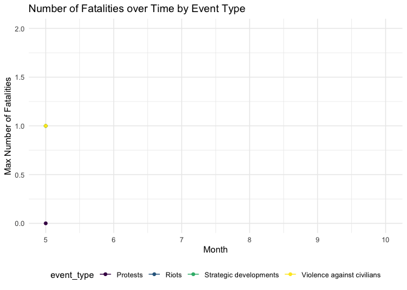

Since early 2020, there has been a lot of media coverage of the Black Lives Matter protests in the United States. While there were peaceful protests occurring, it seemed that riots and events that turned violent were getting more media coverage, and therefore would appear to be occurring more than peaceful protests. The following plots show various ways to view the amount of protests that occurred in the United States between May and October 2020, and give perspective in the matter.
anim_data =
protest_data %>%
group_by(month, event_type) %>%
filter(event_type %in% c("Protests", "Riots")) %>%
count(event_type) %>%
summarize(
prop_event = sum(n)/15215
)
anim_plot =
anim_data %>%
ggplot(aes(x = month, y = prop_event, color = event_type)) +
geom_line() +
geom_point() +
labs(title = "Proportion of Protest and Riot Events by Month",
x = "Month",
y = "Proportion of Events") +
theme(plot.title = element_text(hjust = 0.5)) +
transition_reveal(month)
animate(anim_plot, renderer = gifski_renderer())
As shown in the plot above, the proportion of peaceful protests is consistently greater than the proportion of riots each month. While the proportions seem to converge in October, this is because the overall number of demonstrations decreased, while the peak was in June. This graph can work to emphasize the number of protests in relation to riots or other developments.
protest_data %>%
group_by(event_type) %>%
count() %>%
filter(n >= 10) %>%
plot_ly(
x = ~reorder(event_type, n),
y = ~n,
color = ~event_type,
type = "bar", colors = "viridis") %>%
layout(
xaxis = list(title = "Demonstration Type"),
yaxis = list(title = "Number of Demonstrations")
)protest_data %>%
group_by(sub_event_type) %>%
count() %>%
filter(n >= 10) %>%
arrange(desc(n)) %>%
plot_ly(
x = ~reorder(sub_event_type, n),
y = ~n,
color = ~sub_event_type,
type = "bar", colors = "viridis") %>%
layout(
xaxis = list(title = "Demonstration Subtype"),
yaxis = list(title = "Number of Demonstration Subtypes")
)The first bar plot reiterates what was shown in the scatterplot above: there were far more protests recorded than any other type of event, contrary to what is often depicted. The second bar plot further shows the events in the first bar plot as subtypes and shows that peaceful protests were the most prevalent event type, with 88.7% of protest types classified as a peaceful protest.
protest_data %>%
mutate(
state = as.factor(state)
) %>%
filter(event_type == "Protests") %>%
count(state) %>%
mutate(
state = fct_reorder(state, n, .desc = FALSE)
) %>%
plot_ly(
x = ~state,
y = ~n,
color = ~state,
type = "bar", colors = "viridis") %>%
layout(
xaxis = list(title = "State"),
yaxis = list(title = "Number of Protests"))The above plot depicts the number of protest events that occurred in each state between May and October 2020. Overall, there were more protests in California than in any other state. Florida, Illinois, New York, Pennsylvania, and Texas also had larger numbers of protests during the data coverage period. This is not surprising given that these states have large populations and have highly populated cities; however, among states with urban areas, the number of protests per state is salient.